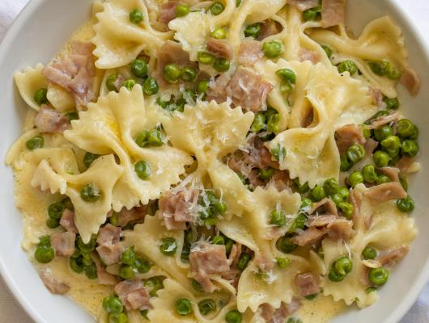

Farfalle with Peas, Ham, & Cream
Home

Description
Farfalle with peas, ham, and cream. Quick and easy Italian dinner recipe that can be made in less than 20 minutes.
Ingredients
- 1 pound farfalle pasta
- 1 cup of peas
- 1 teaspoon unsalted butter
- 3 to 4 slices ham
- 1/2 cup heavy cream
- 1/2 cup parmesan cheese